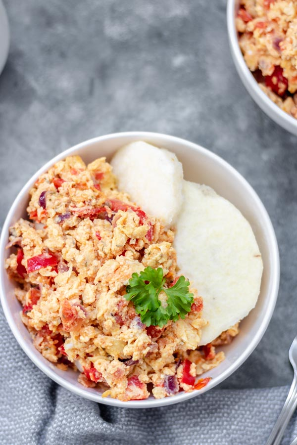

Indomie Noodles

Description
This is my best delicacy personally.
It is the favourite of so many people as well.
Ingredients
- Yam
- Eggs
- Onions
- Sugar
- Vegetable Oil
Steps
- Slice yam into pieces of your of your choice.
- Put in water and add little sugar to cook for 20 minutes
- Prepare 3-4 eggs to fry after heating the vegetable oil.
- Prepare the egg and serve together with the yam.